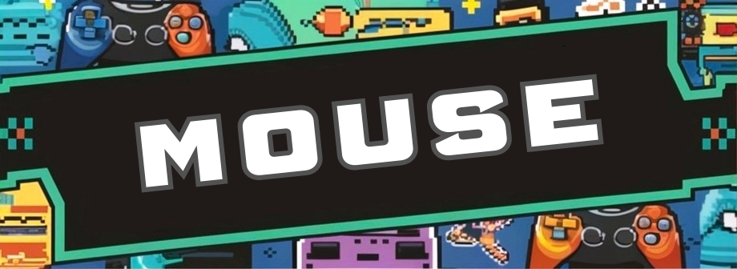

|
 |
 |
 |  |
 |
 |
Teclados de membranaFueron principalmente los que revolucionaron el mundo de los teclados. Estos, como su nombre indica, utilizan una membrana flexible debajo de sus teclas, lo que los hace muy baratos y fáciles de fabricar. Suelen ser los teclados más silenciosos, por otra parte. En estos teclados has de bajar completamente la tecla al presionarla, lo que puede producir un exceso de ejercicio o fatiga en los dedos y las manos, que a largo plazo puede provocar dolencias como el síndrome del túnel carpiano. Además, son más difíciles de limpiar, ya que no podremos quitar las teclas. Por lo tanto, la basura y el polvo se acumulan debajo de ellas. Por esto, tienen un período de vida algo más corto en comparación con los mecánicos. Si lo que buscas es la sencillez, estética pero sobre todo un teclado barato este puede encajar a la perfección contigo.Los teclados de membrana son los más comunes y los que llevan la mayoría de portátiles. Aunque no todos; por ejemplo, el modelo ASUS ROG Strix SCAR 15 trae un teclado mecánico. Si realmente te interesa un teclado de membrana bonito con una excelente iluminación te podemos recomendar el HyperX Alloy Core RGB. |
Teclados mecánicosEstos teclados están diseñados para durar hasta 50 millones de pulsaciones a diferencia de los de membrana, que solo duran de 5 a 10 millones de pulsaciones. Otra característica importante es que estos son capaces de registrar todas las teclas a la vez, o también llamado anti-ghosting. Esto es muy útil para todas esas personas que escriben muy rápido (son los teclados ideales para trabajar) o para todos los jugadores que necesitan combinaciones de teclas con mucha rapidez. Estos, a diferencia de los de membrana, utilizan un switch debajo de cada tecla. Dependiendo del tipo de switch, se obtiene una sensación táctil, velocidad de respuesta y sonido distinto del clic. En el mercado de los switch podemos encontrar marcas como Outemu, Kailh o Razer aunque actualmente lo maneja sobre todo la marca Cherry MX y MX2. Estos consisten en un resorte y dos contactos metálicos. Los dos contactos chapados en oro de Cherry MX evitan la oxidación aumentando su vida útil. Cualquier teclado mecánico que tenga los switches Cherry MX será una garantía de que será un buen teclado. Los tipos de switches se pueden diferenciar por el color de su base, que se encuentra debajo de la tapa. Tenemos el color negro, marrón, rojo, azul y blanco. Si quieres explorar más acerca de los tipos de switches, te recomiendo que leas este artículo sobre los tipos de switch para teclados y sus diferencias. La ventaja de estos teclados, aparte de que tienen una velocidad de respuesta más rápida y una mejor calidad en cuanto a acabados, es que son mucho más fáciles de limpiar. Al extraer las teclas simplemente debes colocarlo boca abajo y sacudirlo hasta que todos los residuos sueltos caigan. Puedes apoyarte también de aire comprimido para sacar los restos que queden. Estos son los mejores teclados del mercado si lo tuyo es el gaming. Eso sí, prepara el bolsillo porque un buen teclado puede llegar a costar de 100€ a 500€. Eso sin contar los teclados personalizados que podrían llegar a superar los 1000€. Pero no te asustes, aquí te dejo un par de recomendaciones asequibles para disfrutar aún más de tus partidas: Newskill Pyros Speed Pro Ivory para quienes busquen un teclado más compacto y el HyperX Alloy Origins PBT para quienes aman lo tradicional sin perder ese toque gaming. |
HistoriaAdemás de teletipos y máquinas de escribir eléctricas como la IBM Selectric, los primeros teclados solían ser un terminal de computadora que se comunicaba por puerto serial con la computadora. Además de las normas de teletipo, se diseñó un estándar de comunicación serie, según el tiempo de uso basado en el juego de caracteres ANSI, que hoy sigue presente en las comunicaciones por módem y con impresora (las primeras computadoras carecían de monitor, por lo que solían comunicarse, o bien por luces en su panel de control, o bien enviando la respuesta a un dispositivo de impresión). Se usaba para ellos las secuencias de escape, que se generaban por combinaciones entre teclas, siendo una de las más usadas la tecla Ctrl. La llegada de la computadora doméstica trae una inmensa variedad de teclados, tecnologías y calidades (desde los muy reputados por duraderos del Dragon 32 a la fragilidad de las membranas de los equipos Sinclair), aunque la mayoría de equipos incorporan la placa madre bajo el teclado, y es la CPU o un circuito auxiliar (como el chip de sonido General Instrument AY-3-8910 en los MSX) el encargado de leerlo. Son casos contados los que recurren o soportan comunicación serial (curiosamente es la tecnología utilizada en el Sinclair Spectrum 128 para el keypad numérico). Solamente los MSX establecerán una norma sobre el teclado, y los diferentes clones del TRS-80 seguirán el diseño del clonado. |